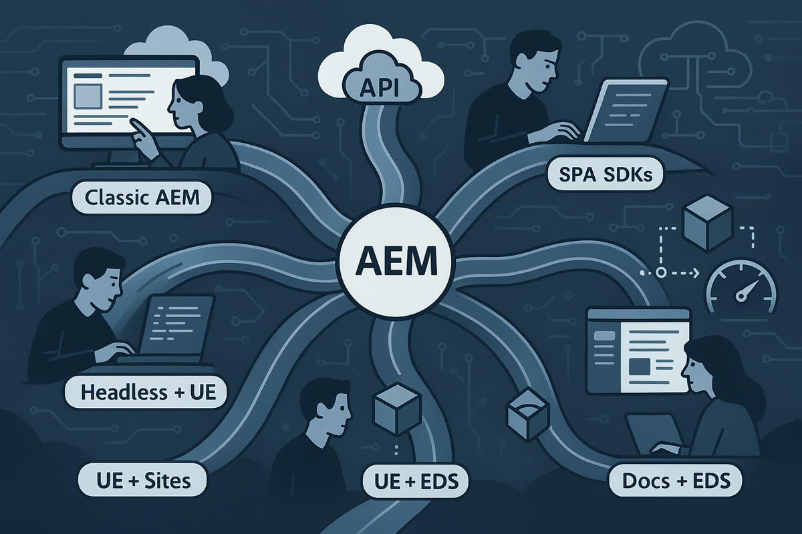

First published as a LinkedIn article on June 4, 2025. Rewritten for this site in October 2026. This is my professional blog and doesn't represent Accenture's Adobe practice or our partnership with Adobe. Client scenarios are illustrative: "it's possible to do this", not "we did this x times".
What changed since I wrote this
A month later, Adobe added a third way to author Edge Delivery sites, da.live. I wrote up the three Edge Delivery authoring options and said this title should say 8 capabilities now: Making sense of the three EDS offerings. Adobe has since renamed Document Authoring to Experience Workspace, and its guide Where to author your site now lists four places to author an Edge Delivery site: Experience Workspace, Microsoft SharePoint, Google Drive, and Universal Editor in AEM Sites.
The "Backend dev in AEM" row for the two Edge Delivery columns needs an asterisk too. In 2026 I built Google sign-in on an Edge Delivery site with AEM Edge Functions, code Adobe runs on its CDN in front of the site: AEM Edge Functions on a laptop. That still isn't backend development in AEM, but it's server-side code on Edge Delivery again.
The matrix and opinions below are what I published in June 2025. I only wrote out the check marks and warning signs as words.
Why no sales slide shows all seven
When consulting companies go to market, we pick a few of these options to bring to customers. Some because the customer asked for them. At best, we bring what we think is best for the customer. At worst, we focus on what we can execute on.
I don't imagine all seven ever make it onto a single sales slide, from Adobe or from any consulting firm. Winning work is about storytelling and building a narrative. A slide with all seven, shown out of context, will distract and confuse.

If Adobe ran a workshop and the client decided on Edge Delivery Services, service providers will bring EDS stories. If a long-time consulting team decided on headless, then headless becomes the focus of Adobe's storytelling too.
At best, consulting firms have the breadth to bring the best solution to the client. Leaner Adobe partners may have to bring what they know, or what they have staffing for.
To me, the big picture of all of Adobe's offerings often gets lost in that process. Seeing the whole map helps my technical brain. I hope it helps yours too, without reading a 20-page readout.
The seven options, side by side
The matrix puts the seven options in columns and the features in rows, from two perspectives: functional (authoring and the end user experience) and non-functional (technical, infrastructure and analytics). I split each into traditional and modern options so a table fits on a screen. Sample sites are the public examples I pointed to in June 2025, my employer's own sites or Adobe references. Some of this is up for debate; when I published it, I asked people to argue with it so I could learn and update the chart.
Seven columns are hard to read on a phone, so pick any two options and compare them row by row:
Functional, authoring and end user experience
| Feature | Classic AEM 6.5 (Core Components) | AEM as a Cloud Service (Core Components) | AEM with SPA SDKs |
|---|---|---|---|
| Sample site (June 2025) | Should be obvious | accenture.com | Should not disclose |
| Authoring mode | Touch UI | Touch UI | Touch UI |
| Editor used | Classic dialog XML editor | Classic dialog XML editor | Classic editor |
| DAM / asset usage | AEM Assets | AEM Assets (cloud-optimized) | Yes |
| Authoring speed | Slowest | Faster | Medium |
| End user personalization experience | Adobe Target / AJO | Same | Same |
| Author personalization integration (Target) | Yes, Experience Fragments | Yes, Experience Fragments | Depends |
| Business use case fit | Full control, legacy | Full stack CMS | SPA-heavy frontend, legacy |
| Feature | AEM headless Content Fragments + UE | UE with AEM Sites | AEM UE + EDS | Docs with EDS |
|---|---|---|---|---|
| Sample site (June 2025) | Should not disclose | ue-remote-app.adobe.net | experienceleague.adobe.com | newsroom.accenture.com |
| Authoring mode | UE dialogs (Content Fragments) | UE dialogs (page + model definition) | UE dialogs (page + model definition) | Word or Google Docs |
| Editor used | Universal Editor | Universal Editor | Universal Editor | Docs editor + Sidekick |
| DAM / asset usage | AEM Assets (cloud-optimized) | Yes | Yes | Optimized via EDS |
| Authoring speed | Fast | Medium | Medium | Fastest |
| End user personalization experience | Same | Same | Same | Same |
| Author personalization integration (Target) | Yes, Content Fragments | Yes, Experience Fragments | Not sure what's supported out of the box | No productized export of content to Target offers |
| Business use case fit | API-first, modern, mobile and web | Modern Sites authoring? | High-performance sites with AEM features (workflows, permissions) | Editorial, newsrooms, speed, ease of use |
Non-functional: technical, infrastructure and analytics
| Feature | Classic AEM 6.5 (Core Components) | AEM as a Cloud Service (Core Components) | AEM with SPA SDKs |
|---|---|---|---|
| Client HTML rendering | AEM renderer | AEM renderer | External (CSR/SSR) |
| Backend dev in AEM | Full | Full | Yes, limited to content |
| Content stored in | JCR (Sites, XF, CF) | JCR (Sites, XF, CF) | Pages |
| Delivery architecture | Monolithic / Dispatcher | Cloud containerized | Headless app + AEM APIs |
| Analytics support | Adobe Analytics via data layer | Same | Varies, depends on the SPA |
| Technical use case | Full-stack, high control | Scalable enterprise CMS | Decoupled UI, app-driven |
| Ways to get Markdown or JSON | .model.json (or a custom servlet) | .model.json | .model.json |
| Feature | AEM headless Content Fragments + UE | UE with AEM Sites | AEM UE + EDS | Docs with EDS |
|---|---|---|---|---|
| Client HTML rendering | External (CSR/SSR) | AEM-rendered HTML enhanced via .model.json endpoints | EDS runtime | EDS runtime |
| Backend dev in AEM | Not recommended | Full | None | None |
| Content stored in | Content Fragments | Pages | Pages | Docs (Google Docs or SharePoint) |
| Delivery architecture | Headless app + headless API | Headless app + AEM Sites headless API, or just AEM Sites | AEM Sites + decorate.js | Markdown to HTML + decorate.js |
| Analytics support | Varies, depends on the SPA | Depends on HTML or JSON | Varies, depends on the implementation | Varies, depends on the implementation |
| Technical use case | Pure headless delivery | Editable sites with .model.json, or extend typical sites without dialogs | Edge-performant hybrid | Doc-driven publishing with no CMS |
| Ways to get Markdown or JSON | GraphQL + persisted queries | .model.json, .infinity.json | .md | .md |
One note on the "UE with AEM Sites" column: its HTML is rendered by AEM and enhanced through .model.json endpoints, which is different enough that I said at the time I could make this article eight capabilities.
Where most service providers agree
These are the points where I see Adobe and the service providers generally aligned:
- Universal Editor is no longer experimental. When properly instrumented, it can edit in context everything from page content to Experience Fragments.
.model.jsonis still foundational for Sites and SPA use, and developers must define content models carefully to support authoring and preview. It's the OG omnichannel option after.-1.json, the raw dump of the JCR, which I've heard of people using as renderable data for the frontend.- Document-based authoring in Edge Delivery is fast, scalable and predictable. It doesn't support personalization or omnichannel out of the box, but it has the lowest friction for publishing.
- Edge Delivery moves away from rendering every request on a server, toward content generated ahead of time and cached at the edge. That's what makes it fast.
- GraphQL with persisted queries is the direction Adobe is pushing for headless. It brings structure, cacheability and security. I go into the caching side in the headless article.
- Most developers underestimate the effort to fully enable Universal Editor. It's not a toggle. It's a shift in the development workflow, with frontend partners building dialogs and maybe even model definitions.
Instrumenting has a concrete meaning. Adobe's getting started guide has every page carry a meta tag pointing at the AEM connection and load Adobe's cors.js script, and every editable element carry data-aue-resource, data-aue-type and data-aue-prop attributes that tie it to the content behind it. Somebody has to add those to every component the authors should be able to touch.
Sites Editor or Universal Editor
While I built the matrix, I checked an Adobe slide that summed up the three editors. My notes agreed with it:
- The Content Fragment Editor is built into AEM, form-based, decoupled from any UI and focused on headless. It's schema-based and mostly used with GraphQL or JSON APIs.
- The Sites Editor is built into AEM, page-based, WYSIWYG with inline editing, tightly coupled to AEM rendering and focused on headful sites. It gets complex for headless, because editable templates and HTL need
.model.jsonto serve content headlessly. - Universal Editor is separate from AEM. It edits both Sites and Content Fragment content inline, supports other backends through extensions (with development setup), supports Edge Delivery Services, and integrates lightly, especially with Edge Delivery and external SPAs.
Universal Editor is less feature-rich than the Sites Editor. It has no editable templates and weaker dialog support. I'd still pick it for headless or hybrid frontends where React or Next.js reads content over APIs, for Edge Delivery, for content reused across web, mobile and kiosks, and wherever the rendering lives outside AEM. The Sites Editor still wins when authors want drag-and-drop layout control, when the site uses editable templates and policies, and when it's built on HTL and Sling Models with heavy use of component dialogs.
One expectation to set early when a client on AEM 6.5 asks about Universal Editor with Sites: the content can likely be migrated, but the components have to be rebuilt, and authoring moves from inside AEM to editing on the live site.
My spicier takes
These are my opinions, not aligned with anyone:
- Sites with Universal Editor is a confusing middle ground. You get in-context editing, but only if your
.model.jsonand instrumentation are airtight. Or you can use.infinity.json, as Adobe's ue-remote-app.adobe.net sample does, which is also confusing. - Headless Content Fragments with Universal Editor has a strong omnichannel story, but it can be overkill if you aren't integrating across multiple touchpoints. As I wrote in Why AEM headless makes sense when frontend teams lead, this pattern fits best when the frontend team is very strong or tightly coupled with another vital system.
- Classic AEM still has one of the best WYSIWYG experiences, but you carry all the weight of on-premise or container-based management. It may not be as cool as Universal Editor, but it's far more functional, and arguably still the best in the industry.
- Docs-based Edge Delivery authoring will scale faster than any other model. It's one of the few models where authoring is so streamlined that content teams can scale independently of deep AEM development.
- Edge Delivery will likely be coupled with other cloud solutions.
- I think moving business logic out of AEM is the right approach overall.
How things could end up
No single pattern wins. They all exist for a reason.
Sometimes it's political. Sometimes it's what the client asked for. Sometimes it's the shape of the wedding cake.
But knowing the tradeoffs is vital to the first step of any implementation. Not every project has the luxury of time to evaluate seven options. When you've seen the full map, you can steer better.
This matrix isn't a prescription. It's a way to ask better questions.